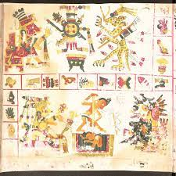
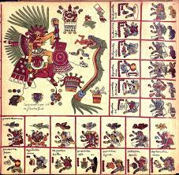

Mitologia Mexica
Elaborado por: Ana Paola Vega Flores
La mitología mexica es una extensión del complejo cultural. Antes de llegar los aztecas al
valle del Anáhuac, ya existían antiguos cultos y diosas del sol que ellos adoptaron en su
afán de adquirir un rostro. Al asimilarlos también cambiaron sus propios dioses, tratando de
colocarlos al mismo nivel de los antiguos dioses del panteón nahua. De esta manera,
elevaron sus dioses patronos, Huitzilopochtli y Coatlicue, al nivel de las antiguas deidades
creadoras, como Tláloc, Quetzalcóatl y Tezcatlipoca.
Los sabios nahuas o tlahtimines trataron de dar un poco de orden a esta multitud de dioses,
así, tenemos en primer lugar a los dioses creadores, o Ipalnemohuani, ésta es una palabra
nahua que significa "aquél por quien se vive" y dado que en náhuatl no existe el plural más
que para los nombres de cosas, se ha especulado mucho sobre una posible tendencia
monoteísta de los aztecas. Aunque esta interpretación puede estar originada por la
influencia monoteista occidental al no valorar la importancia en la cultura Nahuatl del
concepto de dualidad creadora. Los dioses creadores eran en primer lugar, Ometéotl
(Ome-dos Teotl- Deidad) el principio de la dualidad creadora que a su vez engendraba en sí
mismo como origen y efecto a Ometecutli (Ome-Dos Tecutli-Señor) elemento masculino de
origen, y Omecihuatl (Ome-dos Cihuatl-Señora) elemento femenino de origen.
A partir de ellos surgían 4 elementos rectores principales: Tezcatlipoca Señor del espejo
negro y Quetzalcóatl Serpiente Emplumada, creadores del mundo, Tláloc Señor del agua y
Ehécatl
Señor del viento proveedores de la lluvia y de la vida. Otros nombre que se le daban a estos
dioses son Tloque Nahuaque ("El inventor de sí mismo" o "El señor del cerca y junto"). La
mayor parte de la poesía náhuatl que sobrevive, usa estos nombres para referirse a los
dioses creadores. Después estarían los dioses patronos, que eran los encargados de vigilar
a cada pueblo.
DEIDADES AZTECAS
Según una antigua leyenda, cuando los grupos nahuas (las tribus nahuatlacas) salieron de
Aztlan, cada una de ellas llevaba consigo su "bulto sagrado", que contenía las reliquias de
su dios patrono. Huitzilopochtli era el dios patrono de los mexicas, pero ellos también respetaban los dioses de los otros pueblos. Junto al templo mayor construyeron un templo
especial para los dioses patronos de todos los pueblos conquistados, de manera análoga al
Panteón romano.
Existían así mismo, dioses dedicados a cada profesión y aspecto de la vida. Xipe Tótec,
dios del reverdecimiento fue adoptado como el dios de los plateros, Nanahuatzin, de las
enfermedades de la piel, Tlazotéotl, diosa del amor físico y de las prostitutas
El origen de los dioses mexicas
Al principio de los tiempos, cuando nada existía, surgió Ometéotl: el dios que se creó a sí
mismo. Después, Ometéotl dio vida a: Ometecuhtli y Omecíhuatl, quienes se consideran
como la Pareja Creadora.
Ambas deidades procrearon a los cuatro Tezcatlipocas: Xipe Tótec (el rojo), Yaótl (el negro),
Quetzalcóatl (el blanco) y Huitzilopochtli (el azul).
A partir de estas deidades principales, van a surgir muchas otras cuya popularidad varía.Por
ejemplo, pocos hemos oído hablar de Chantico, diosa de los tesoros personales,
pero,muchos sabemos que Tonatiuh es dios del sol.
La creación de un nuevo universo
La cosmogonía mexica señala cuatro creaciones del mundo junto con sus respectivas
destrucciones. Una vez que finalizaron esos ciclos, tuvo lugar el mito del surgimiento del
Quinto Sol.
En este, se cuenta que, en medio de la oscuridad y del caos, apareció Huehuetéotl, dios del
fuego, quien pidió que alguna deidad se arrojara a la hoguera que había creado para que
renaciera en forma de sol.
Fue así como Nanahuatzin, dios enfermo y lleno de pústulas se
ofreció. Segundos después, Tecciztécatl, el Señor de los Caracoles, también lo hizo. Este
último, a diferencia de Nanahuatzin, era fuerte pero también soberbio. Ambos señores se
prepararon para el sacrificio. Sin embargo, el gran día, Tecciztécatl se arrepintió por lo que
Nanahuatzin, sin dar muestra alguna de cobardía, se aventó. Celoso, Tecciztécatl también
se arrojó a la hoguera y entonces surgieron dos soles.
Como dos astros no podían coexistir o el mundo colapsaría, se decidió que Nanahuatzin,
gracias a su gran valor, se convirtiera en sol mientras Tecciztécatl se transformaría en la
luna. Después de que Nanahuatzin se elevara en el cielo, comenzó la era del Quinto Sol,
una nueva época para los mexicas
El nuevo universo fue recreado sobre Cipactli, una serpiente gigante que flota en el vacío.
En la cabeza de Cipactli se formaron trece cielos; al centro se encuentra Tlipac, la tierra y
en su cola surgieron nueve inframundos. A lo largo y ancho de estos espacios habitan los
dioses donde, según la escritora Adela Fernández y Fernández, “las fuerzas superiores e
inferiores convergen en la tierra influenciándola; asimismo, diariamente los cuerpos celestes
caen al inframundo y emergen de él”.
Lista de sus 30 deidades conocidas
- Ometeótl: dios de la dualidad.
- Mictlantecuhtli: dios de la muerte y Señor del Mictlán.
- Mictecacihuatl: diosa de la muerte, Señora del Mictlán y esposa de Mictlantecuhtli.
- Ometecuhtli y Omecihuatl: deidades creadoras.
- Xipe Tótec: dios de la abundancia, el amor y la riqueza.
- Quetzalcóatl: dios de la vida y de la sabiduría.
- Huitzilopochtli: dios de la guerra.
- Cipactonal: dios de la astrología y los calendarios.
- Coatlicue: diosa de la fertilidad.
- Tlacotzontli: dios protector de los caminos nocturnos.
- Yaótl o Tezcatlipoca: dios del cielo y la tierra, además de fuente de la vida.
- Yacatecuhtli: dios de los mercaderes y viajeros.
- Centeotl: dios del sustento.
- Amimitl: dios de los pescadores y de los lagos.
- Xochipilli: dios del amor, la belleza, la danza y el placer.
- Tonatiuh: dios del sol.
- Tláloc: dios de la lluvia, los terremotos y el rayo.
- Ixtlilton: dios de la medicina y de los festivales
- Cinteteo: se trata de cuatro dioses del maíz.
- Meztli: diosa de la luna.
- Mixcóatl: dios de las tempestades, la guerra y la caza.
- Ehécatl: dios del viento.
- Xiuhtecuhtli: dios del fuego y del calor.
- Mayahuel: dios del maguey.
- Atlacoya: diosa de la sequía y la desesperanza.
- Chantico: diosa de los tesoros personales.
- Chicomecóatl: diosa de la vegetación.
- Cihuacóatl: diosa de los nacimientos y patrona de los médicos y las parteras.
- Huehuecóyotl: dios de la música y patrón de la sexualidad.
- Tlazolteotl: diosa del amor.
Pulsa aqui
PANTEON AZTECA